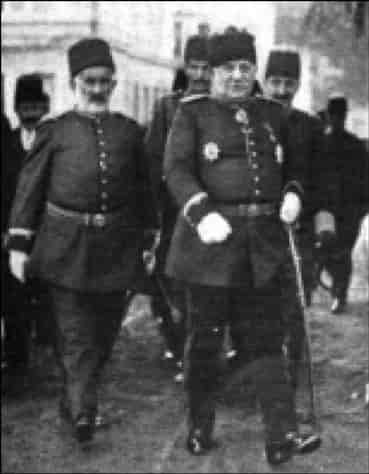
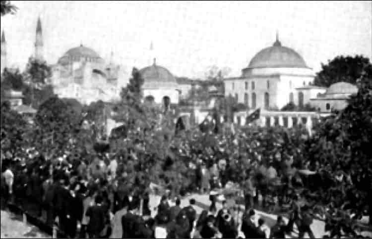
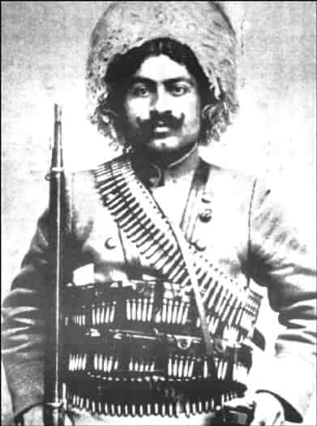
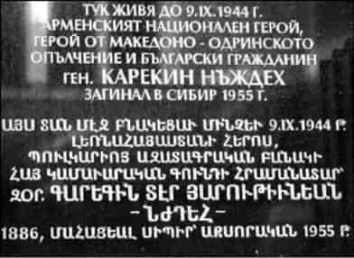
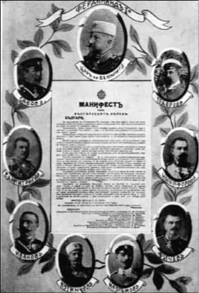
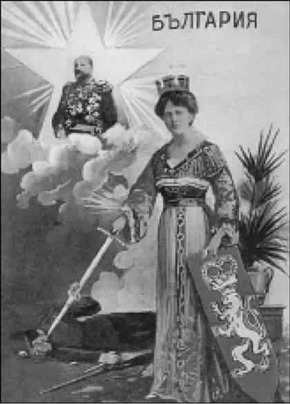
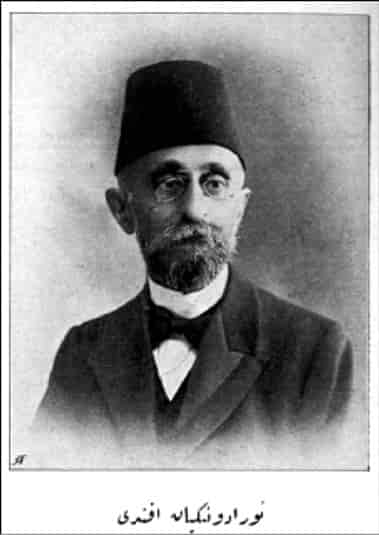
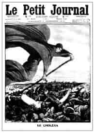

5
Bulgar ordusu İstanbul kapılarında
Dört Balkan devletinin Osmanlı’ya karşı ittifak ettiğini, Karadağ ve Sırbistan’ın İşkodra ve Kosova vilayetleri ile Manastır vilayetinin kuzeyini ele geçirdiğini görmüştük. Yunanistan da Yanya, Selanik vilayetleri ile Manastır vilayetinin güneyini ele geçirmişti.
Bulgar’ın gözü Trakya’nın tamamını kapsayan geniş Edirne vilayetinde, hatta İstanbul’dadır. Batı Rumeli vilayetlerinde Sırp, Yunan ve Karadağ kuvvetlerine karşı Ali Rıza Paşa kumandasındaki Batı ordusunun savaşlarını aktarmıştık. Bu bölümde Trakya’da Bulgarlarla yapılan savaşları göreceğiz. Edirne vilayetini, yani bütün Trakya’yı Abdullah Paşa kumandasında Doğu ordusu savunacaktır.
Başkumandan vekili Nazım Paşa’dır; padişah sembolik başkumandan olduğu için...
Savaştan önce Balkan devletleriyle Osmanlı devleti arasında notalar teati edilmekte, gerilim hızla tırmanmakta, savaş yaklaşmaktadır. 8 Ekim’de Karadağ savaş ilan etmiştir, sırada diğer üç Balkan devleti vardır: Sırbistan, Yunanistan ve Bulgaristan... Fakat iki gün sonra, 10 Ekim 1912’de beş büyük devlet, Avusturya, Rusya, İngiltere, Fransa ve Almanya, dört Balkan devletine ve Osmanlı İmparatorluğu’na birer nota verdiler. Özetle, savaşa karşı olduklarını açıkladılar. Osmanlı’dan Balkanlar’da reform yapmasını istediler ve aynı zamanda Osmanlı’nın toprak bütünlüğünü vurguladılar. Hepsinden önemlisi, eğer savaş çıkarsa, kim kazanırsa kazansın, Balkanlar’da sınırların değişmeyeceğini, aynen devam edeceğini bildirdiler.

Nazım Paşa.
Büyük Devletler’in, savaşı kim kazanırsa kazansın sınırlar değişmeyecek diye açıklama yapmalarının sebebi, savaşı Osmanlı’nın kazanabileceğini düşünmeleridir. 1897 yılında çıkan Türk-Yunan savaşında Gazi Ethem Paşa kumandasındaki Osmanlı ordusu büyük bir zafer kazanmıştı. 1907 yılında, İngiliz Genelkurmayı geniş istihbarat bilgilerine dayalı olarak hazırladığı senaryoda, muhtemel bir Türk-Bulgar savaşında, eğer Bulgaristan Rusya tarafından desteklenmezse, zaferi Türklerin kazanacağı sonucuna varmıştı.1
Fakat aşağıda göreceğiz, Türk ordusu mağlup olunca Batılılar sınır değişikliğini destekleyecektir!
Zafer hayalleriyle coşanlar
Osmanlı ordusunun dört Balkan devleti karşısında korkunç bir hezimete uğrayacağını kimse düşünmüyordu.
Şükrü Hanioğlu: Hiç kimse Osmanlı ordusunun böyle bir yenilgiye uğrayacağını tahmin etmiyordu. Hatta Büyük Devletler bu savaş öncesinde nota verip, statükonun değişmesini tanımayacağız dedikleri zaman, korktukları Osmanlı’nın savaşı kazanmasıydı! En azından Osmanlı’nın savaşı kazanacağını ya da Balkan ordularını durduracağını, en fazla Balkanlar’ın ufak tefek başarı kazanacağını, onun ötesinde bir şey olmayacağını düşünüyorlardı. Çünkü Osmanlı ordusu kâğıt üzerinde zayıf bir ordu değildi.
Fakat Osmanlı ordusunun ciddi bir sorunu vardı; askerini Balkanlar’daki bir savaş durumunda cepheye götüremiyordu. Bilhassa Osmanlı ordusunun uzak Anadolu vilayetlerinden ve Arap vilayetlerinden, yani Bağdat’taki, Şam’daki, Halep’teki birliklerini bölgeye nakletmesi çok uzun zaman alıyordu. Çünkü demiryolu sistemi çok gelişmiş değildi. Osmanlı Devleti’nin bu seferberliği hızlı uygulayabilmesi için denizyolunu kullanması lazımdı fakat, Yunanlar Averof zırhlısının yarattığı avantaj nedeniyle denize hâkim olunca bu da yapılamadı. Mesela İzmir’den Selanik’e, diğer yerlere asker nakletmek mümkün olamadı.
Dolayısıyla, kriz hızla gelişti ve bilhassa İttihatçıların tahrikleri sonucunda hükümet istememesine rağmen savaş hızla başladı, savaş biraz daha geç başlayabilseydi belki daha fazla Osmanlı askeri cepheye nakledilmiş olurdu. Yani Osmanlı ordusu kâğıt üzerindeki üstünlüğünü Balkan Harbi’nde gösteremedi. Sayısal üstünlüğünü gösteremedi ve bazı yerlerde eşit, bazı yerlerde Balkanlıların üstün olduğu yerlerde savaşmak durumunda kaldı.
Osmanlı’nın savaşı kazanacağına inananların başında Başkumandan Vekili Nazım Paşa gelmektedir. Yaşlı sadrazam Ahmet Muhtar Paşa ve hükümeti, bu arada Hariciye Nazırı (Dışişleri Bakanı) Osmanlı Ermenisi Gabriel Noradungyan Efendi savaşa karşıdırlar, önlemeye çalışırlar.2 Fakat Bakanlar Kurulu toplantısında Başkumandan Vekili Nazım Paşa, ordunun hazır olduğunu, bir haftada Bulgaristan’ın başşehri Sofya’ya gireceğini söylemektedir:
Harbin ilanından itibaren bir haftaya kalmaz Filibe ve Sofya’da Osmanlı bayraklarını görürsünüz... Trakya’da hazırlıklarımız tamamdır, savaş derhal ilan edilmelidir.3
Muhteris ve beceriksiz bir kumandan olduğunu göreceğimiz Nazım Paşa, Sofya fatihi olacağından o kadar emindir ki, subaylara şu tavsiyede bulunuyor.
Merasim elbiselerinizi yanınıza almayı unutmayın. Çünkü iki ay sonra Sofya’ya girerken ihtiyacınız olacak!4
Bu sırada İstanbul’da Sultanahmet ve Beyazıt meydanlarında Darülfünun (Üniversite) gençliği, Talat Bey, Aka Gündüz, Bahattin Şakir gibi isimler başta, İttihatçılar “Harp isteriz!” diye mitingler yapıyor!
Gazeteci Yakup Kadri Karaosmanoğlu, Hüküm Gecesi adlı romanında “danışıklı halk gösterisi” dediği “Harp isteriz!” mitinglerinden birini şöyle anlatır:

Sultanahmet Meydanı’nda “Harp İsteriz!” mitingi.
Bazı ele başıları, ardlarına yarı üniversite gençlerinden, yarı miting halkından ve yarısı da bayağı sokak kalabalığından bir insan yığınını takıp Babıâli’nin kapılarına dayandı. Bunlar sadaret [başbakanlık] dairesinin merdivenlerinin önünde hep bir ağızdan
“Harp isteriz. Harp, harp!” diye bağırıyorlardı...
Derken, sadaret kapısının aralandığı görüldü. Azametli, iriyarı bir kumandan silueti... Öfkeli ve aynı zamanda rahatsız edilmiş bir adam sesi:
– Ne bu gürültü, ne istiyorsunuz?
– Harp istiyoruz; harp istiyoruz! Milli namusumuz domuz çobanlarının oyuncağı olamaz.
– Harp istiyorsunuz öyle mi? Peki yarından başlayarak hepinizi askere alacağım. Razı mısınız?
Bir durulama ve susma ânı... Sonra zoraki bazı sesler:
– Razıyız, razıyız. Biz miskinlik istemeyiz. Ya ölüm ya şeref.
Osmanlı gazetelerinden çoğu da milliyetçi hamaset içindedir, geçmişteki Osmanlı zaferlerini, fetihlerini anlatarak savaşın yaklaştığını haber verirler:
Sabah, 4 Ekim 1912: Yaşasın Harp! Sabah gazetesinde Darülfünun talebelerinin “Harp isteriz” diye yaptığı miting coşkulu bir dille anlatılır. Gazetenin başyazarı Dikran Kelekyan ateşli bir Osmanlı vatanseveridir. Zafer müjdeleyen yazılar yazmaktadır.
Alemdar, 9 Ekim 1912: Osmanlılar silah başına! Alemdar gazetesi kahramanlık şiirleriyle halkı orduya katılmaya çağırmaktadır.
Hikmet, 2 Ekim 1912: Muharebe için ısrar etmeliyiz! Hikmet gazetesi çıkacak savaşın Osmanlıların da işine geleceğini, kazançlı çıkılacağını yazıyor.
İkdam, 2 Ekim 1912: Balkanlar’da Seferberlik! İkdam gazetesinin ünlü başyazarı Ali Kemal, orduya cesaret ve kahramanlık ruhu veren haber ve yazılar yazıyor.
Sebilürreşad, 4 Ekim 1912: Mehmet Âkif’in Cenk şiiri yayımlanır. Şiir Milli Mücadele sırasında da Ankara hükümeti tarafından orduya tamim edilecektir.
Fakat bu hamasetin sebebi, Osmanlı tarihinin hafızalardaki izleriyle düşünülmesidir. Halbuki 1912 Ekimi’nde Osmanlı ordusu zaaf, hatta kargaşa içindedir. Gazetelerde yazılanlar ve sokaklarla “Harp isteriz” diye yapılan mitingler, zamanın orduları hakkındaki bilgiye sahip olmadan, tarihin şan ve zaferleriyle coşan duygulardır... Osmanlı’nın durumu hiç de dışarıdan sanıldığı gibi değildir. Ordu iç isyanlarla yıpranmıştı; son olarak Arnavutluk ve Yemen isyanlarıyla uğraşıyordu. 1908 Meşrutiyet devrimiyle orduda cuntalar, politik kamplaşmalar meydana geldiği gibi siyasi istikrar da bozulmuştu. Sık sık hükümet krizleri yaşanıyordu. Balkan toplumları ise milliyetçilik duygusuyla ve askeri reformlarla savaşa hazırlanmıştı.
Ordunun hal-i perişanı
Ordu böyle dört cepheli bir savaşa hazır olmadığı halde Başkumandan Vekili Nazım Paşa belki de moral vermek için5 taarruz stratejisini benimsiyor, Osmanlı ordusunun Bulgar mevzilerine taarruz etmesini istiyordu. Halbuki savaşı fiilen yönetecek olan Doğu Ordusu Kumandanı Abdullah Paşa bırakın dört Balkan devletiyle savaşmayı, Bulgaristan’la savaştan bile ümitsizdi. Şu sözler Abdullah Paşa’nındır:
Balkan devletlerinden sadece Bulgaristan’la bile başa çıkacak durumda değiliz. Silahlı kuvvetlerimizin hali perişandır. Düşmanı Çatalca’da durdurabilirsek başarıdır.6
Abdullah Paşa bilgili, görüş sahibi değerli bir askerdir.7 Bu sözleri, moral bozukluğuna bağlansa bile maalesef gerçek çıkacaktır.
Dahası, siyasete bulaşmak orduyu öyle bir kargaşaya atmıştır ki, Şevket Süreyya Aydemir, daha önceden hazırlanmış muhtemel harp harekât planlarının bütün dolaplar arandığı halde bulunamadığını yazar. Aslında dörtlü bir Balkan ittifakı halinde ne yapılacağına dair bir planın bulunduğu bile şüphelidir:
Şükrü Hanioğlu: Osmanlı Devleti’nin üç Balkan devletine karşı planlarının olmadığı söylenir. Ben askeri tarihçi değilim, onun için bilemiyorum doğruluk derecesini ama birçok kaynak bunu belirtiyor ve diyorlar ki, mesela devletin Bulgar-Sırp saldırısına karşı bir planı vardı ama üçlü bir saldırıya karşı devletin ciddi bir planı yoktu. Bütün bunlar son anda hazırlandı... Tekrarlayayım, ben bunların doğruluk derecesini bilemiyorum ama bu da bir sorun olmuş olabilir. Fakat tabii bunun da ötesinde, ordu çok fazla siyasete bulaştığından çok ciddi bir disiplin sorunu vardı Osmanlı ordusunun. Bir de tabii Arnavut isyanının etkileri neticesinde Arnavut askerler ve subaylar savaşmadılar ve bunun sonucunda da gerçekten belki de Osmanlı askeri tarihinin en yüz kızartıcı yenilgilerine uğranıldı.
Rumeli’deki Batı cephesinde de, Trakya’daki Doğu cephesinde de Osmanlı ordusunun feci mağlubiyetlere uğramasının sebeplerinden biri de seferberlik tamamlanmadan savaşa girilmesidir. Seferberlik planına göre Osmanlı Trakya’daki bir savaşta 479.000 asker çıkarabilirdi. Halbuki Bulgarlarla savaş başladığında Trakya’daki asker sayısı 115.000’den ibaretti.8 Anadolu’dan ve Arap vilayetlerinden yeterince asker getirilememişti.
Edirne müstahkem mevkiini savunmak için ayrıca 50.000 mevcutlu Edirne kolordusu bulunmaktadır. Batı cephesindeki toplam Osmanlı askeri 165.000’dir. Bu sayı savaş içinde Osmanlı Asyası’ndan getirilen askerlerle artırılacak, fakat hiçbir zaman üstünlük sağlanamayacaktır.
İtalyan eğitimli Bulgar Genelkurmay Başkanı General Fichev, savaşın uzaması halinde Osmanlı’nın Asya topraklarından asker getirip üstünlük sağlayacağını hesaba katarak süratle sonuç almaya yönelik bir hücum stratejisi benimsemiş, ordusunu buna göre hazırlamıştı. Resmi açıklamalarında hedeflerinin Edirne kalesini almak olduğunu söylüyordu. Asıl planları Edirne’yi kuşatma altına almak, fakat orada kalmadan hızla İstanbul’a doğru yürümekti.9 Öyle de olacaktır.
Savaşın başladığı 19 Ekim’de Trakya’da Osmanlı’nın toplam 165.000 askerine karşı, Bulgaristan’ın, Makedonya’daki ordusu hariç, Trakya’da 250.000 askeri vardır.10
Bulgar ordusu sadece sayıca değil, kalite bakımından da üstündür. Andonyan’ın belirttiği gibi, Bulgar ordusunun silahları tamdır. İaşe ve ikmal konvoyları mükemmel şekilde işleyecek durumdadır. Seferberliğini hızla tamamlayabilmiştir. Bulgar Genelkurmayı Osmanlı ordusu hakkında doğru bilgilere sahiptir, özellikle Osmanlı’nın askeri yığınaklarını ve yerlerini iyi bilmektedir. Bulgaristan’ın bu şekilde iyi hazırlanmış 250.000 kişilik ordusundan başka 20.000 çetecisi, komitacısı vardır. Bunlar uzun yıllardan beri elde silah savaştıklarından ayrıca eğitime ihtiyaçları yoktu.11
Bulgar ordusunun iyi istihbarat topladığı açıktır. Şevket Süreyya Aydemir’in şu satırlarını hatırlamamak mümkün değildir:
Bulgar Genelkurmayı Osmanlı ordusunun hazırlıksızlığını, dağınıklığını ve hele disiplin ve moral bozukluğunu elbette ki biliyordu. Çünkü Rumeli’de Bulgar casusluğunun yaygınlığı bilinmektedir... Mahalle çarşılarındaki poturlu Bulgar sütçülerin aslında kıyafet değiştirmiş Bulgar zabitleri olduğunu, fırınlar, bakkallar işleten Bulgarların, Bulgar yüzbaşıları, Bulgar binbaşıları olduklarını sokaktaki oyunlarımız arasında ve o yaşlarda bile tartışırdık. Hele Bulgar papazlarını hep casus sayardık. Mahalledeki oyunlarımızın çoğu çetecilik yahut çetelerle muharebe oyunlarıydı.12
Balkan Savaşı’ndan sonra artık Türklerde de “homojen toplum” olma özleminin doğmasının sebepleri, yaşanan bu kanlı tarihi tecrübelerde aranmalıdır.
Balkan Harbi’nde yer alan 20.000 Bulgar çetecisinden bahsederken yine hatırlamak gerekir ki, 1890’lardan beri Makedonya’yı kana bulayan, Osmanlı yönetimini çökerten, daha o yıllarda Türkleri göçe zorlayan da bu komitacılar, bu çetecilerdi; tabii Yunan ve Sırp komitacılarıyla birlikte. Şimdi Trakya’da etnik temizlik yapacaklardı.
Antranik çetesi
Sayıları 20.000’i bulan Bulgar çeteciler ya da komitacılar daha savaş başlamadan Türk hududuna doğru harekete geçmişlerdir.13 Sivil Türklere karşı katliam ve tehcir eylemlerini bu çeteler yapacaktır. Troçki de çete ya da komitacıların yaptıkları zulümlerle kötü ün kazandıklarını belirtir.14
Savaş çıkınca, gerek cephe gerisi durumundaki Bulgaristan’da, gerek Trakya’da işgal edecekleri Osmanlı topraklarında Türklere karşı katliam ve tehcir eylemlerini, etnik temizlik harekâtını asıl bu çeteler yapacaktır. Bunların içinde bir de gönüllü Ermeni çeteleri vardır. Bulgar ordusunun emrindeki bu Ermeni çetelerinin iki kumandanı ünlüdür: Biri, Birinci Dünya Harbi içinde Doğu Anadolu’daki katliamlarıyla Antranik adıyla ün kazanacak olan Toros Ozanyan’dır.
Balkan Harbi’nde Bulgaristan’da kurulan Ermeni lejyonunun diğer ünlü kumandanı Karekin Ter-Harutyunyan’dır. Bulgar vatandaşlığına geçerek Nıjdeh soyadını aldı. Sonradan Bulgaristan Komünist Partisi’ne katıldı. Sofya’da yaşadığı eve konulan Bulgarca bir kitabenin Türkçe tercümesi şöyle:
Bulgaristan vatandaşı General Karekin Nıjdeh,
Ermeni ulusal kahramanı ve Makedonya-Edirne direnişi kahramanı,
9 Eylül 1944 tarihine kadar burada yaşadı.
Sibirya’da 1955 yılında öldü.
Sasun isyanı, Abdülhamid’e bombalı suikast, kanlı Adana olayları ve Balkanlar’da Ermeni lejyonu kurulması gibi hadiseler iki milletin arasını büsbütün açarak, 1915 ve sonrası facialara zemin hazırlayacaktır.
Osmanlı sadece ordudaki disiplinsizlik ve kötü kumanda bakımından değil, iç bünyesindeki etnik ve dinsel farkların artık ayrılıkçı milliyetçilikler haline gelmiş olmasından dolayı da zayıftı, Balkanlar’da bir savaşı kaldıracak durumda değildi.


Balkan Savaşı’nda Bulgaristan’da kurulan
Ermeni lejyonunun kumandanlarından
Karekin Nıjdeh’in komitacı kıyafetiyle resmi ve
yaşadığı eve Bulgarların koyduğu Ermenice ve
Bulgarca kitabe.
Şartlar bu kadar olumsuz olduğu halde, savaşı kazanacağına inanan ve kör bir inatla taarruz stratejisini uygulamak isteyen Başkumandan Vekili Nazım Paşa’nın isteğiyle 17 Ekim 1912 sabahı, Osmanlı Devleti savaş ilan etti.
“Kan ve din kardeşliği için savaş”
18 Ekim’de Bulgaristan savaş ilan ederek karşılık verdi. Bulgar kralı ya da Bulgar çarı Ferdinand Karl Leopold, bir Alman prensidir ve Fransa İmparatoru Louis-Philippe’in torunudur. Belki de kendini Bulgarlara kabul ettirmek için, Büyük Bulgaristan’ı gerçekleştirmek, Ayasofya’da ayin yapmak gibi tutkuları vardır. Savaş ilanı bildirisi de çok ilgi çekicidir.
Tepede kendisinin, Bulgar Çarı Ferdinand’ın resmi, sağda ve solda Bulgar kumandanlarının resmi vardır. Bütün Bulgaristan’da aynı saatte duvarlara, meydanlara asılmıştır. “Bulgarlar” hitabıyla başlayan savaş ilanında Çar Ferdinand “kan ve din kardeşliği” yani Slavlık ve Ortodoksluk vurgusu yapıyor, Haç’ın Hilal’e galip gelmesi için Bulgarları silah başına çağırıyor. İşte Bulgar çarının savaş ilanı bildirisinden birkaç cümle:
Türkiye’deki kan ve din kardeşlerimizin, Hıristiyan halkın kurtuluşunu sağlamak için silaha sarılmaktan başka çare kalmadı...
Türkiye’deki Hıristiyanların haklarını savunmak için savaş ilan edildiğini Bulgar milletine bildiriyorum. Yiğit Bulgar ordusuna Türk toprağına doğru yürümesini emrediyorum...
Sırbistan, Yunanistan ve Karadağ orduları da ortak düşmana karşı dövüşüyorlar...
Haç’ın Hilal’e karşı, özgürlüğün istibdada karşı olan bu savaşında adalet ve ilerleme taraftarlarının desteği bizimle beraberdir.
“Çar” unvanına da sahip olan Bulgaristan Kralı Ferdinand, “ağabey Rusya”ya şükran sunmayı da ihmal etmemiştir:
Cesur Bulgar askerleri atalarının kahramanlıklarını ve önderleri olan kurtarıcı Rusların sancağını hatırlayarak zaferden zafere koşacaktır.15

Bulgar Kralı Ferdinand’ın savaş ilanı bildirisi.
Savaş için hazırlanmış bir poster daha vardır: Bulgaristan kraliçesi bir elinde kalkan, öbür elindeki kılıçla bir Türk’ü öldürüyor!
Balkan devletleri ve Bulgaristan saldırgan bir milliyetçilikle ve askeri modernizasyonla savaşa iyi hazırlanmıştır:
Şükrü Hanioğlu: Bilhassa Bulgar ordusu Almanlar tarafından eğitilmiş bir orduydu, hatta birçok askeri uzman, disiplin ve kuvvet açısından Alman ordusundan sonra ikinci ordu Bulgar ordusudur, diyorlardı. Tabii bu ufak bir ordu sonunda, yani Fransız ordusundan daha kuvvetli bir ordu değil ama disiplin ve uygulama açısından kendi ölçeğinde bunu söylüyorlardı. Hatta Bulgaristan bağımsızlığını ilan ettiği zaman, 1908 Ekimi’nde, Osmanlı Devleti bir savaş mı ilan etsek fikrini tartışıyor ve burada bütün Alman uzmanlar diyorlar ki, sakın ha öyle bir şey yapmayın, çok ciddi bir bela alırsınız başınıza! İşi diplomatik yollarla halletmeye çalışın! Düşünün ki, sadece Bulgaristan’a karşı bir savaş söz konusuydu 1908’de. Bulgar ordusu çok güçlü bir ordu. Biz hep tabii, işte eski tebaamızdı, nasıl olur, demişiz. Ama işte ciddi bir modernizasyon yapmışlar. Çok sayıda insanı, çok uzun süre silah altında tutmaya başlamışlar. Osmanlı da bunu yapıyordu fakat dediğim gibi isyanlar nedeniyle bunu devam ettiremedi. Askerler tezkere istediği zaman bunların çoğu tekrar gönderilmek zorunda kalınıyordu.
Bulgaristan’daki milliyetçi militarist modernleşme, kargaşa içindeki Osmanlı Devleti’nde moral bozucu etki yapıyordu. Balkan Savaşı’na Batı cephesinde yarbay olarak katılan Fevzi Çakmak şunları yazıyor:
Osmanlı Genelkurmay Başkanlığı 1910 tarihli askeri harekât planında, Bulgar kuvvetlerini dörtte bir fazla hesaplamış, Batı ordusu komutanlığı Bulgar seferberliğini iki kat daha hızlı görmüş, gerçekten karşımızda küçük Almanya varmış gibi herkes kuşkuya kapılmıştı. Bu askeri propaganda ne yazık ki moralimizi bozmuştu.16

Bulgar savaş posteri, Kraliçe yaralı olarak
yere serilmiş bir Türk’ü kılıcıyla işaret ediyor.
Arka planda Bulgar Kralı Ferdinand.
Tarihçi Richard Hall, Bulgar ordusunun “Japon askeri gibi” kendini feda ederek savaştığını, bilhassa Bulgar topçusunun da üstün olduğunu anlatır:
Bulgarların kendini feda etme tutumlarının yanı sıra çok etkili bir topçu kuvveti de başarılarının anahtarıydı. Bulgarlar düşman mevzileri üzerine hızlı ve devamlı ateş yağdırabiliyorlardı. Türklerin muharebeye soktukları her topçu bataryasının karşısına Bulgarlar yarım düzinesini savaşa sürüyorlardı ve Türkler düzensiz ve kötü yönetiliyorken, Bulgar mermileri aralıksız bir fırtına şeklinde maksimum tesirle Türk mevzilerine iniyordu.17
Çok iyi hazırlanmış, modernleşmesini ve seferberliğini büyük ölçüde tamamlamış, savaşkan, milliyetçilikle motive olmuş Bulgar ordusu... Yeterince hazırlanmamış, savaşkanlığını ve disiplinini kaybetmiş Osmanlı ordusu... Bizim Genelkurmay yayınlarında da orduda ve halkta savaşa karşı bir isteksizlik olduğu örneklerle anlatılmaktadır.18
Osmanlı ordusunda bozgun
İki ordu arasındaki çarpışmalar 19 Ekim’de başladı. Osmanlı komuta kademesinde hâlâ taarruz mu, savunma mı tartışması yapılıyordu. 20 Ekim gecesi Başkumandan Vekili Nazım Paşa’nın taarruz emri Trakya ordusu kumandanı Abdullah Paşa’ya ulaştı. Abdullah Paşa istemeye istemeye taarruz emri verdi! Trakya’daki dört Osmanlı kolordusu bütün Bulgar mevzilerine taarruza geçti. İlk gün üstünlük Türklerdeydi. Bulgarlar biraz geri çekilmişti.
Bulgar tarafı ise yanıltıcı stratejiler hazırlamıştı. Bulgar Genelkurmayı savaştan önce defalarca yaptığı açıklamada asıl hedeflerinin Edirne olduğunu, gerekirse Edirne için 100.000 asker feda edeceklerini söylemişti. Halbuki Bulgarların en güçlü ordusu olan General Dimitrief kumandasındaki III. Ordu, Osmanlı istihbaratına takılmadan Istıranca dağlarını aşarak Mahmut Muhtar Paşa kumandasındaki 3. Ordu’ya saldırdı.
Bulgar III. Ordusu’nun Istıranca dağlarını araşarak Osmanlı ordusunu vurması, önemli bir askeri harekâttır. Andonyan bunu Napoléon ordusunun Alp dağlarını aşarak İtalya’ya girmesine benzetir. Osmanlı subayları da Alman askeri uzmanları da “ordu” büyüklüğünde bir askeri birliğin Istıranca dağlarını aşarak hücum edemeyeceği görüşündeydi. Istırancaları geçen Bulgar III. Ordusu, taarruz halindeki Mahmut Muhtar Paşa’nın 3. Ordusu’na yandan saldırdı. Andonyan, haklı olarak, Trakya’daki savaşın kaderini, Istıranca’dan yapılan bu harekâtın belirlediğini yazar.19
Mahmut Muhtar Paşa’nın ordusu, sağ yandan saldıran Dimitrief’in ordusuna mukavemet edebilir, hatta onu püskürtebilirdi. Fakat ani bir panik çıktı... Hava çok soğuk, yağmur yağıyor, her yer çamur... 24 Ekim’de Osmanlı ordusu elindeki topları, tüfekleri, mühimmatı bırakarak kaçmaya başladı!
Tümen kumandanı Albay Cemal Bey’in Gazi Ahmet Muhtar Paşa’ya çektiği telgraf başlayan felaketi haber veriyor:
Çarpışmalar devam ederken bütün sağ kanat cephesinde acı acı “Allah, Allah” sesleri peyda olmuş ve arkadan çeyrek saat geçmeden taburlardan birçok askerin perakende bir şekilde geri çekilmekte oldukları görülmüştür. Durum inanılacak gibi değildir...
Birkaç taburun düşmana teslim olduğu şeklinde bir söylenti çıkmış, hızla yayılmış, moraller bozulmuş, panik başlamıştı. Mahmut Muhtar Paşa’nın kendisi şöyle anlatır:
Askeri tarihte, herhangi bir sebebi olmadan benzer bir kaçışın başlamasına hiçbir örnek yoktur. Bulgarlar savaşmadan büyük bir zafer kazandılar. Türkler düşmanın baskısına maruz kalmadan sadece kötü hava şartları ve yolların durumu nedeniyle mağlup olarak kaçtılar.
Cephe boyunca öyle bir panik yaşandı ki, kaçarken karşılaşan iki tabur, düşman sanarak birbirini biçti.
Savaşta Mahmut Muhtar Paşa’nın kurmay heyetinde bulunan Alman Binbaşı Gustav von Hochwachter,20 kumandasız, kendi başına kalan askerlerin bu bozgununu şöyle anlatır:
Kendi başlarına terk edilmişler. Ayakkabı benzeri bir şeylerle çamurun içinde yalpalayarak, ilerleyerek, soğuk geceyi sırılsıklam, korunaksız geçirdikten sonra, gün doğumuyla tekrar cepheye gidiyorlar. Bir saat ateş altında çarpıştıktan sonra fişeği tükeniyor, Bulgarlar giderek yaklaşıyor. Yağmurda şişen cephane sandıkları ne kürekle ne kasatura ile açılabiliyor... İliklerine kadar korku ve ölüm hissediyor... Her şeyi beraberinde sürükleyen panik böyle başladı. Yolların sanki başı sonu yok, ilerlemek imkânsız, dereler taşmış, köprüler yıkılmış, köyler yanıyor. Ve düşman ateşi asker saflarını biçiyor. Bu akınlar halinde kaçış korkunç. İnsan hayvana dönüşmüş ve savaşın tüm iğrençlikleri ve felaketi almış başını gidiyor. Bu sahneleri yaşayan ömrü boyunca unutamaz.21
Osmanlı ordusunun paniğe kapılıp geri çekildiğini öğrenen Bulgar Genelkurmayı derhal taarruz emri verdi. Bulgar ordusunun dört kolu askeri düzen içinde 24 Ekim Perşembe günü Kırkkilise’ye, bugünkü adıyla Kırklareli’ne22 girdi. Şehirde tek Müslüman kalmamıştı, katliamdan korkarak göç kafileleriyle, yağmur altında, çamurlar içinde yollara düşmüşlerdi. Bulgar ordusu Kırklareli’ndeki Hıristiyanların sevgi gösteriyle şehre girdi. Tarihçi Richard Hall, Şerif Paşa’nın şu sözlerini nakleder:
Kırklareli Osmanlı İmparatorluğu’nun anahtarı idi ve bu anahtar düşmana teslim edildi.23
Gabriel Noradungyan Efendi
Savaşın ilk günlerinde İstanbul’da Hariciye Nazırı (Dışişleri Bakanı) Osmanlı Ermenisi Gabriel Noradungyan Efendi’nin, yabancı gazetecilerle yaptığı bir görüşme vardır, önemlidir. Noradungyan’ın, Taksim’de “yeşil pencere kanatları hep kapalı duran küçük, sakin evinde” gerçekleşen bu görüşmeyi gazeteci Stephane Lauzanne yazmıştır. “Mağlup bir ülkede bakan olmak zor, ama Dışişleri Bakanı olmak daha zor” diyen Lauzanne, çok iyi Fransızca konuşan hukukçu Noradungyan’ın sözlerini şöyle aktarıyor:
Gabriel Noradungyan Efendi Türkiye’nin önemini ağırbaşlı ve kimi zaman da büyük bir belagatle anlattı.
– Bu kadar sabır ve hoşgörü gösterebilecek bir başka büyük devlet Avrupa’da yoktur... İki ay önce bir gün iki silahlı çete topraklarımıza girerek askerlerimizi öldürdü, kentlerimizden birini talan etti, müstahkem mevkilerimizden çoğunu yıktı. Bu çeteler, kendini uygarlaşmış sayan Karadağ’ın çeteleriydi... Bu tür eylemler her yerde casus belli [savaş sebebi] sayılır. Biz, hoşgörüyü güçsüzlüğe vardırdık; kiliseyi onarttık, müstahkem mevkileri yeniden yaptırdık, ölülerimizi gömdük ve oralarda halkın öfkesini dindirdik. Biz böyle davrandık.
Osmanlı devletinin azınlıklar ve Makedonya sorununu çözmek için iyi niyetle yaptığı ıslahatları sıralayan Noradungyan Efendi Avrupalı gazetecilerle konuşmasını şöyle sürdürdü:
Ne kadar ıslahat yaparsak ya da yapmaya girişirsek, Balkan devletleri o kadar saldırgan ve küstah oluyorlar. Şimdi savaş var. Olsun. Biz bu savaşı ne istedik, ne de çıkması için çaba harcadık. Bizim istemememize rağmen, Avrupa’nın istememesine rağmen savaş çıktı. Ne var ki, tarihin sorumluluğu asla bize yüklenemeyeceği gibi bu savaşı bütün gücümüzle ve bütün vatanseverliğimizle sürdüreceğiz...
Noradungyan Efendi’nin “Ne kadar ıslahat yaparsak ya da yapmaya girişirsek, Balkan devletleri o kadar saldırgan ve küstah oluyorlar” sözü tarihe düşülmüş çok önemli bir nottur: Makedonya sorunu bir “gayrimüslimlerin hak ve özgürlükleri sorunu” değildi, toprak kazanma hırsıyla kıvranan irredantist, saldırgan milliyetçilikler sorunuydu.

Hariciye Nazırı Gabriel Noradungyan Efendi.
Noradungyan Efendi, daima Türkiye’yi suçlu gören ve Hıristiyan Balkan milliyetçiliklerini destekleyen Avrupa kamuoyuna, gazeteciler vasıtasıyla şu mesajı veriyordu:
Düşman topraklarına girersek, misafirler yabancı bir ülkede nasıl davranıyorsa biz de öyle davranacağız, eğer bozguna uğrarsak bunu dürüstçe karşılayacağız. Kan dökücülük ya da talan bizim tarafımızdan sergilenmeyecek.24
Noradungyan Efendi, artık bozgunun iyiden iyiye ortaya çıktığı, Rumeli’de ve Trakya’da bozgunlar yaşandığı sırada da Dışişleri Bakanı olarak yabancı gazetecilerle tekrar görüşüyor. Yine gazeteci Lauzanne’in anlattığına göre, Noradungyan “biraz solgun, allak bullak bir yüzle... kısık bir sesle” şunları söylüyor:
Tarihimizde benzeri görülmemiş bir olay oldu... Birliklerimiz Kırkkilise’den çekildiler. Birliklerimiz yenilmediler, paniğe kapıldılar.
Osmanlı Hariciye Nazırı Ermeni Gabriel Noradungyan Efendi, Avrupalı gazetecilere bu bozgunun sebeplerini özetlerken şunları da söylüyor:
Birliklerimizin içinde Rum ya da Bulgar kökenli çok asker var... Ayrıca ordumuzda subayların sayısı da çok az... Dahası onlar da siyaset yaptılar.25
Osmanlı ordusunun Meşrutiyet’le birlikte “çokuluslu” hale getirilmesinin nasıl zaaf yarattığını gelecek bölümlerde ayrıntılı göreceğiz. Noradungyan’ın derin bir üzüntüyle konuştuğu, doğru teşhisler koyduğu açıktır. İmparatorluk dağılıp da hele de tehcirden sonra yollar tamamen ayrılınca, Avrupa’ya yerleşerek Ermeni sosyal faaliyetlerinde yer alacak olacak olan Noradungyan Efendi, yanına Paşalıyan’ı da alarak Lozan’da İsmet Paşa’yı özel olarak ziyaret edecek ve “Türkiye’nin bir yerinde” kendilerine “Ermeni yurdu” verilmesini isteyecek, tabii İsmet Paşa bunu reddedecektir.26
Çeşitli etnik kökene sahip başka sadık Osmanlılar da imparatorluk dağılınca, “kendi” uluslarına, “kendi” ülkelerine gitmiştir ki bunlardan Osmanlı/Türk eğitimine çok büyük katkısı bulunan Satı Bey’in Suriye’de gidip Suriye-Arap milli eğitiminde kurucu bir rol aldığını tipik bir olay olarak hatırlamak gerekir. Satı Bey, Hilmi Ziya Ülken’in övgüyle anlattığı bir eğitimcimizdi.27
Bu konular ırk meselesi değildir; geleneksel siyasi aidiyet kültürü, etnik milliyetçilik akımlarının gelişmesiyle siyasi konjonktürün değişmesi ve bunun siyasi kültürde meydana getirdiği değişmeler gibi açılardan bakmak gerekir.
Balkan Savaşı’na dönelim. Bulgar ordusu Çatalca’ya doğru ilerlerken öbür Balkan ulus-devletleri gibi Bulgar ordusu ve Bulgar komitaları Trakya’da etnik temizlik de yapıyordu.
Etnik temizlik, homojenleştirme ve tehcir
Ordu bozgunla kaçarken, sayıları 20 bini bulan Bulgar çeteciler, savunmasız kalmış köylere, kentlere karşı etnik temizliğe başladılar. Antranik çetesi de bunlardan biridir. Müslüman halk, kaçan ordudan imdat bekliyor. İstanbul’a imdat telgrafları yağıyor. Ferecik Belediye Başkanı Abdülhamid Bey’le Müderris Niyazi Efendi’nin sadrazama çektiği uzun telgrafta Dimetoka çevresindeki durum, özetle şöyle anlatılıyor:
Bir haftadan beri Dimetoka ve civarında ortaya çıkan çeteler oraları ateşe vererek, katliam yaparak demiryolu ve köprüleri tahrip etmişlerdir. Bulgar ordusu geliyor diyerek bütün kasaba ve asker ailelerini perişan etmişlerdir. Allah korusun, şu bir iki gün içinde Dimetoka ve Sofulu üzerine bir kuvvet yetiştirilmezse burada bir tek Müslüman kalmayacağı anlaşılmaktadır. Allah ve Resulullah aşkına tedbir alın. Bütün ailelerle telgraf başında şevketlû hükümetimizin cevabını bekliyoruz!
Keşan’dan ahali namına Ali, Hayri, Mehmet, Neşet ve Mustafa tarafından yeni sadrazama çekilen telgraf:
Ordunun durumundan istifade eden komitalar katliam ve yağma yapıyor. İslam köyleri dört saat zarfında imha edilmiştir. Uzunköprü, Havza, Hayrabolu, Babayiatik, Sofulu ahalisi tümüyle buraya göç etmiştir. Çetelerin Keşan’a geleceği anlaşıldığından süratle nizami ordudan kuvvet gönderilmesi, yarına kadar yetişmezlerse göçmen olacağımız ve evlerimizin mahvedileceğini arz ederiz.28
Maalesef ordu ve devlet bu imdat çığlıklarına karşılık verebilecek durumda değildir. Ordu bozgun halinde Lüleburgaz’a doğru çekiliyor, hatta kaçıyordu. Ordunun çekildiği yerlerde Bulgar “Makedonya Lejyonu” denilen Bulgar çeteleri etnik temizlik yaptı. Teslim olan binlerce asker bile Bulgar ordusu tarafından öldürüldü. Gazeteci Leon Troçki bunu duyan Bulgar Kralı Ferdinand’ın “İyi ki orada hiç yabancı muhabir yokmuş” diye bağırdığını yazmıştır. Batı basınında esirlerin öldürüldüğüne dair bazı haberler çıkmıştır.29
Bulgar sansürünün başında milliyetçi Bulgar şairi Peter Todorov vardır. Gazeteci Leon Troçki, Bulgaristan’dan ayrıldıktan sonra, Kievskaya Mysl gazetesinde ona hitaben yazdığı yazılarda, yayımlanmasını Bulgar sansürünün engellediği gerçekleri anlatır. İşte Troçki’nin yazdığı gerçeklerden kısa bir derleme:
Savaşın en başında Rodop mıntıkasındaki Bulgar kuvvetleri bir [Müslüman] Pomak köyünü top ateşine tutarak, köyde bulunan herkesi, her şeyi, evleri, çiftlikleri, insanları, hayvanları, kadınları, çocukları yok etti...
Silahsız Türkleri suyun içine doğru sürükleyip, onlara yaban ördeklerine ateş eder gibi ateş ettiler, silahsız insanları köprüden aşağıya atmak için süngülerini kullandılar...
Bulgar Makedonya lejyonu, karşılaştıkları tüm Türk sivilleri boğazlarını keserek öldürdüler...
Tırnova’ya gidin, oradan da Kırcali’ye biraz daha güneye kadar yolunuzu uzatın, yolda elleri arkadan bağlanmış ve boğazları boyun kemiklerine kadar kesilmiş sakallı Müslümanlara rastlayacaksınız. Evinin yanı başında kafasına yediği darbe ile ölmüş, yere serili yatan birçok ihtiyar Müslüman kadınla karşılaşacaksınız. Ayrıca kuşkusuz, Türk çocuklarının cesetleri de gözünüze çarpacak...30
Troçki, Bulgar Sansür Kurulu Başkanı Todorov’a hitaben 12 Aralık 1912 günlü Kievskaya Mysl gazetesindeki yazıda böyle birçok örnek verdikten sonra, bunların “münferit olaylar” olmadığını, bu mezalimin savaş sırasında askerlerin duyduğu hınç ve öfkeyle de izah edilemeyeceğini belirtir. Bulgar ordusunun kumandanlarının emriyle “savaş meydanındaki yaralı Türklerin süngülenerek veya hançerlenerek soğukkanlı bir şekilde öldürüldüğünü” hatırlatır.31 Gerçekten Balkan Savaşı’nda Türklerin maruz kaldığı zulüm, savaşın tabiatında olan vahşetin ötesinde, bilinçli, planlı, siyasi kararla uygulanan etnik temizlik işlemidir.
Bulgarlar, Yunanlar ve Sırplar, ele geçirdikleri yerlerde kendilerinden olmayanları, özellikle Müslümanları katliamla korkutup göçe zorlayarak yok etmek ve o toprakları “homojen” uluslarının ülkesi haline getirmek istediler ve yaptılar bunu.
Ordunun bırakıp kaçtığı mühimmat
Osmanlı ordusunun nasıl korkunç bir bozguna uğrayıp çekildiğinin, hatta doğrusu, kaçtığının çok çarpıcı kanıtlarından biri, savaş meydanında ve yollarda Bulgar ordusuna bıraktığı malzeme ve mühimmattır. 13 Ekim 1913’te, Bulgarlarla barış imzalandıktan sona, Sofya askeri ataşeliğine tayin edilen Kurmay Binbaşı Mustafa Kemal Bey,32 1912’deki Kırklareli ve Lüleburgaz bozgunlarında kaçan Osmanlı ordusunun harp meydanlarında Bulgarlara bıraktığı silah, mühimmat ve diğer malzemelerin miktarını tespit edip İstanbul’a rapor etmiştir.
Kırklareli bozgununda 14’lük obüslere ait 12.000 adet top mermisi, mühimmatıyla birlikte 12.000 mavzer, 60’ı seri atışlı 139 top ve bunlara ait 150.000 adet çeşitli top mermisi Bulgarların eline geçmiştir. Lüleburgaz, Pınarhisar ve Babaeski muharebelerinde 156 vagon mühimmat, erzak, çok sayıda top ve piyade cephanesi de harp meydanlarında terk edilmiş, bunları Bulgar ordusu almıştır. Kaçarken terk edilen sıhhi malzeme o kadar çoktur ki, Bulgar ordusu bunları aylarca kullanmıştır.33
Dahası, bu silah ve malzemelerin bir kısmını Ermeni lejyonu toplayarak Türkiye’deki Ermeni komitalarına göndermişti.34
İnsan ister istemez düşünmekten kendini alamıyor. Elinin altındaki bu muazzam malzemeyi bırakıp kaçacak kadar moralsiz, eğitimsiz ve disiplinsiz bir ordu değil de, bunları kullanacak kadar yüksek morale, eğitim ve disipline sahip bir ordu olsaydı, kim bilir tarihin yönü nasıl değişirdi.
Batı Rumeli’de Kumanova bozgunu nasıl oralarda felaketin başlangıcı olduysa, 22-24 Ekim’de Kırklareli muharebelerinin kaybedilmesi de Doğu Rumeli’de yani Trakya’da felaketin başlangıcı olmuştur. Ordu da, perişan halk da en yakındaki Osmanlı şehri Lüleburgaz’a doğru kaçıyor! Eldeki cephaneyi, silahları, gıda stoklarını bırakarak kaçıyorlar! Gazeteci Leon Troçki, bir Bulgar subayının sözlerini aktarır:
Türkler bütün yiyeceklerini ve askeri malzemelerini bırakmışlardı. Kırklareli’den sonra kullandığımız ikmal maddelerinin aşağı yukarı hepsi Türklerden ele geçirdiğimiz maddelerdi.35
Kumandanlar taburları durdurup Lüleburgaz-Pınarhisar arasında bir savunma hattı kurmaya çalışıyor.
Birinci Kolordu Kumandanı Yaver Paşa’nın şu sözleri her şeyi özetliyor:
Birçok Müslüman köyleri cayır cayır yanıyor... Müslüman göçmenler perişan bir halde [Lüleburgaz-İstanbul istikametine] dönüyor. Dönemeyenler düşman ayağı altında çiğneniyor. Bu facialar erlerin ve subayların maneviyatını mahvetmektedir.
Bu sırada Doğu cephesi kumandanı Abdullah Paşa “bu ordu savaşamaz” diye telgraf çeker! Ordunun kumandanı söylüyor bunu! Sadrazam Ahmet Muhtar Paşa’nın oğlu Mahmut Muhtar Paşa, Trakya cephesinde 3. Kolordu kumandanıdır. Abdullah Paşa, Mahmut Muhtar Paşa’ya çektiği bu telgrafta, özetle, “Babana söyle siyasi çözüm bulsun, bu ordu ile savaşılmaz” diyor!36
Yürekler acısı bir durum!
Morali bozuk, açlık çeken, disiplini dağılmış ordu ve sivil göçmen kitleleri en yakındaki Lüleburgaz’a doğru uzun, bitkin, perişan kafileler halinde akıyor...
Lüleburgaz bozgunu
Bulgar ordusu da hırpalanmış, yorulmuştu. 2-3 gün istirahata çekildi. Bu sırada Osmanlı istihkâm birlikleri Lüleburgaz-Pınarhisar hattında acele siperler kazdı. Ordu derin ve dayanıklı kazılamamış olan bu siperlere yerleştirildi. İstanbul’dan 20.000 asker takviyesi yapıldı. Bir savunma hattı oluşturuldu. Abdullah Paşa da biraz kendini toplamıştı.37
Bulgar ordusu 29 Ekim Salı günü bütün Lüleburgaz-Pınarhisar hattı boyuca taarruza kalktı. 20.000 asker takviyesi alan Osmanlı ordusu bu hatta daha iyi dövüştü. Fakat dört gün süren yağmurun her tarafı çamur yaptığı Trakya’da topçu üstünlüğü Bulgarlardaydı. Topçu atışıyla Osmanlı’nın ikmal sistemini çökerttiler. Osmanlı askerinin hiç alışkın olmadığı gece savaşları da Bulgarlara üstünlük sağladı. Bulgarlar jeneratörle çalıştırdıkları projektörlerle gece karanlığını yararak saldırıya geçtiler.38
Tarihçi Ahmet Turan Alkan, hayatında ilk defa projektör gören eğitimsiz taburların projektör ışığından korkarak paniğe kapıldığını anlatır. Orduda tüfek doldurmasını bilmeyen askerler bile vardı, hemen silah altına alınıp cepheye sürülmüşlerdi.39
Yine bozgun başladı. 29 Ekim Salı günü taarruza kalkmış olan Bulgar ordusu 31 Ekim Perşembe günü Lüleburgaz’a girecektir.
Osmanlı ordusunda görevli Alman Binbaşı Hochwachter’in günlüğüne yazdıkları şöyledir:
23 Ekim Çarşamba: [Lüleburgaz] İstasyonda durum korkunç. Herkes kaçıyor, çoluk çocuklarıyla birlikte manda arabalarıyla uzun kafileler halinde hat boyunca veya Tekirdağ’a doğru gidiyorlar. Köyleri yakılmış... Yersiz yurtsuz yollara düşüp kargaşayı daha da artırıyorlar. Fecaat ve sefalet var her yanda. Çocuklar yarı çıplak, kadınlar yalınayak çamurda yürüyorlar. Bazı subay ve erat vahşiler gibi davranıyor, ellerinde tabanca ile istediklerini zorla yaptırıyorlar.40
27 Ekim Pazar: Köylerden birinde konaklayan tüm asker ve subayları Rumlar ve Bulgarlar “kesmişler.” Sadece ceset parçaları, birçok üniforma. Tüfek ve cephane bulunmuş. Mahmut Muhtar Paşa önce bütün kadın ve çocukları köyden çıkarttıktan sonra bütün erkekleri vurdurup köyü yakmış.41
Açlık felaketi
Bozgunda Osmanlı ordusunun başında bir felaket daha vardır: Açlık!
Trakya’da savaşan Doğu ordusu için günde bir tren dolusu ekmek ve peksimet, un ve pirinç lazımdır. Üç gündür aç kalan askere haşlanmış buğday verilmektedir, haşlanmış mısır koçanıyla birlikte!42 Cephe kumandanı Abdullah Paşa’nın kendisi açlıktan bitkindir! Toprak kazılarak çıkartılan kökleri haşlatıp yemektedir! Gazeteci Ashmead-Bartlett kendisine birkaç kutu konserve verir, birkaç gün onunla idare eder!43
Kumandan bile açtır!
Gazeteci Aram Andonyan, geri çekilme halindeki 100.000 askerin “ekmek, ekmek” diye bağırarak kırlarda yürüyüp gittiklerini anlatırken, “imparatorluk ordusu açlıktan kırılıyordu” diye belirtir.44
Neden bu açlık?
Demiryolları felç olmuştur.
Trakya’daki gıda stokları kaçış sırasında Bulgarların eline geçmiştir.
Osmanlı lojistiği çökmüştür, tıpkı kumanda sisteminin ve disiplinin çökmüş olması gibi.
Kısım ayının soğuğunda, yağmur altında, çamurlar içinde, aç ve perişan ordu Lüleburgaz’da da bozguna uğradı. 3 Kasım’dan itibaren Çatalca hattına doğru geri çekilmeye başladı.
Matin gazetesi adına Balkan Harbi’ni izleyen Fransız gazeteci Stephane Lauzanne da Hastanın Başucunda Kırk Gün adlı kitabında, ordunun Çatalca’ya çekilişi sırasında gördüklerini şöyle anlatır:
Osmanlı ordusu bozguna uğradı. Ordu namına ovada çeşitli yollardan, yolsuz bölgelerden Çatalca’ya doğru akıp giden firarilerden başka bir şey kalmamıştı.
Topçular toplarını, cephane sandıklarını terk ediyorlar, levazımcılar erzaklarını bırakıyorlar, yahut biraz et yemek için kendi hayvanlarını öldürüyorlar, piyadeler tüfeklerini atıyorlardı. Bunu takip eden bütün bir gün ve gece sırasında 100 bin kişinin felaketi, bozgunluğun üstünde en masum, en korkunç kâbusun kanadını görmüştü: Açlık.
Süvarilerin gürültüsünü, yaralıların iniltisini bastıran “Ekmek, Ekmek!” feryadı bir ananın bedduası gibi göğe yükseliyordu. Bağımsız Süvari Tümen Kumandanı Cemil Bey, karmakarışık bir halde firar eden bir takımın üzerine atılmış,
– Niçin kaçıyorsunuz, diye bağırmıştır. Cevap verdiler:
– Kaçıyoruz, çünkü ekmeğimiz yok.45
Perişan halde geri çekilen ordu birlikleri 8 Kasım’dan itibaren Çatalca mevzilerine geldiler. Osmanlı Genelkurmayı şimdi İstanbul’un 25 kilometre batısındaki Çatalca’da bir savunma hattı kurarak Bulgar’ın İstanbul’a girmesini önlemeye çalışacaktı. Bulgar ordusunun Başkumandan Vekili General Savof, Sofya’da ataşemiliter olan Fethi Okyar Bey’e şöyle diyor:
En az sekiz ayda ele geçirmeyi hayal ettiğimiz yerlere iki ayda ulaştık!46
Bulgar milliyetçiliğinin bundan sonraki hedefi, Çargrad dedikleri İstanbul’dur; Çatalca’daki savunma hattını geçebilirlerse tabii...
Adriyatik’ten Çatalca’ya kadar, tüm Rumeli elden çıkmış, ay yıldızlı bayraklar inmişti. Kırklareli düştüğünde Lüleburgaz’a sığınmış olan Müslüman ahali, şimdi Lüleburgaz’dan Çatalca’ya, İstanbul’a sığınmak için bir kere daha yollara düşmüştü.
Balkanlar’da etnik temizlik devam ediyordu.
Bulgaristan ordusu “din ve kan kardeşliği” yani Ortodoks Hıristiyanlık ve Slavlık gibi duygularla, heyecanla savaşırken, Osmanlı ordusu niye kaçıyordu? Bu ordu, Plevne’deki kahraman ordu değil miydi? Çanakkale’deki, Sakarya’daki ordu değil miydi? Nasıl böyle utanç verici bir bozguna uğramıştı?
Şükrü Hanioğlu: Tabii Balkan Harbi’nde savaşan Osmanlı ordusu, İstiklal Harbi’nde savaşan asker gibi savaşmıyor... Arkaya bakmadan silahını atıp çekiliyor ordu. Böyle sahneler naklediliyor, mesela ordu nereye kaçacağını bilmiyor. Kuran’dan bir sayfa açıyorlar diyorlar ki tefe’ül47 ile düşünelim, Kuran’da ne yazıyorsa, sağa mı gidelim sola mı gidelim... Böyle bir durumda Osmanlı ordusu birçok yerde direnebilecekken direnmiyor. Askerler subayların sözlerini dinlemiyor, dehşetli bir disiplinsizlik var, subaylar arasında kavgalar var, Arnavutlar savaşmıyor ve dediğim gibi arkaya bakmadan geri çekiliyorlar...
Balkan orduları ve toplumları milliyetçilikle motive olurken Osmanlı ordusundaki idealsizliği gelecek bölümlerde de göreceğiz. Bozgunun temel sebebi, bu idealsizliktir.
Çatalca’da Büyükçekmece ile Terkos gölleri arasında, kuş uçuşu 30 kilometre uzunluğunda bir savunma hattı, bir cephe kurulmuştur. Artık yakındaki İstanbul’dan sevkıyat yapılabilmektedir. Askere sıcak çorba verilebiliyordur. Ordu mevcudu 125-130 bine çıkarılabilmiştir. Kırklareli ve Lüleburgaz muharebelerinde 50-70 bin tüfeğe sahip olan ordunun elindeki silah sayısı en az 110-120 bini bulmuştur.48
Başkentin düşeceğini fark eden askere bir gayret de gelmiştir. Fakat Çatalca’da beklenmedik bir felaket ortaya çıkacaktır!
Bir felaket daha: Kolera
Bir felaket daha vardır: Kolera!
Tarihçiler, koleranın Suriye’den getirilen askerlerden bulaştığını belirtirler.49 Balkan Savaşı’nda önce Türklerde ve ardından Bulgarlarda en büyük katliam kolera ölümleridir. Le Petit Journal dergisi kolerayı kapak yapmıştır!
Mahmut Muhtar Paşa, sonradan kaleme aldığı kitabında “Çatalca hattında ordumuz Bulgar’dan daha tehlikeli bir düşmanla karşılaştı, o da kolera idi” diye yazar.
Alman Binbaşı Hochwachter gördüklerini şöyle anlatır:
Ne kadar çok hasta ve can çekişen var! Zavallı insanlar simsiyah olmuş. Her yerde ölüler yatıyor. Hayalet gibi korkunç bir salgın... Açlıktan yere yığılanları kolera hastası sanıyorlar; adamın ölüp ölmediğini kontrol etmeden, kireç kaymağını üstüne serpiyorlar. Kireç göz çukurlarını yakıyor.50

Le Petit Journal dergisi kolerayı kapak yaptı.
Fransız gazeteci Stephane Lauzanne da yaşanan felaketi gazetesine şöyle yazdı:
Büyükdere Vadisi’ni geçtim. Belgrad Ormanı’na geldiğim vakit uzun bir Türk kafilesine rastladım. Orada bir Türk müfrezesi vardı. O sırada gözlerimin önünde öyle bir facia cereyan etti ki, ömrüm boyunca unutamayacağım. Gördüğüm kafile ne yaralılardan ne de hastalardan meydana gelmişti. Tam anlamıyla “beşeri bir enkazdan” oluşuyordu. Hepsinin vücut ve yüzleri ıstırapla kasılıp kalmıştı. Hepsi acınacak bir halde, adeta kendilerini sürüklüyordu. Bir kısmını hemen hemen arkadaşları götürüyor, bazıları yük arabalarına uzanmış ölülerle karışık gidiyordu. Bu zavallılardan yükselen hıçkırık ve hırıltılar feci bir ortam oluşturuyordu. Can çekişen bu topluluğun arkasında, çamurlu izler boyunca, gömülmemiş insan kalıntısı kuleleri gördüm. Bağırsaklarını dışarıya, toprakların üzerine saçıyorlardı. Beni götüren şoför ilk bakışta işin ne olduğunu anladı. Bana doğru eğildi. Rengi uçmuştu. Mırıldandı:
– Efendi!.. Bunlar koleralılar! ... İnsan vücutlarının çürüyüşünü seyretmek. Binlerce canlının içleri boşalırken bakmak... İşte buna dayanabilecek bir cesaret olamaz.
Kolera savaşın gelecek günlerinde daha büyük tahribat yapacaktır.
Trakya bütünüyle elden gitmiş, İstanbul bile tehlikeye girmiştir. Fakat kuşatılmış bir ada gibi kahraman Edirne tek başına direnmektedir. Balkan Harbi’nde Trakya’da bir Plevne varsa, o da Şükrü Paşa kumandasında direnen Edirne’dir.
Gelecek bölümde bunu göreceğiz.
Edirne direnişi başlı başına bir destan, Edirne’nin düşmesi başlı başına bir faciadır. Edirne’yi kurtarmak gerekçesiyle Yarbay Enver Bey Babıâli’deki Başbakanlık’ı basıp darbe yapacaktır.
1. Halil Ersin Avcı, “İngiliz Belgelerine Göre Edirne’nin Kaybı ve Geri Alınışı”, Bildiriler Kitabı, Uluslararası Edirne’nin Fethinin 650. Yıldönümü Sempozyumu, 4-6 Mayıs 2011, Trakya Üniversitesi Edebiyat Fakültesi Tarih Bölümü, Edirne 2012, s. 375.
2. Noradungyan Efendi’nin savaşı önleme çabaları için bkz. Yusuf Hikmet Bayur, Türk İnkılabı Tarihi, cilt II, Kısım 1, s. 393-396.
3. Cemil Topuzlu’dan, Handan Nezir Akmeşe, The Ottoman Military and the March to World War I, I. B. Tauris, New York, 2005, s. 126, Ş. Süreyya Aydemir, Enver Paşa, cilt II, s. 304
4. Richard Hall, a.g.e., s. 34.
5. Bu görüşü Fevzi Çakmak yazıyor, a.g.e., s. 219.
6. Yusuf Hikmet Bayur, Türk İnkılabı Tarihi, cilt II/1, s. 387. Orijinal metinde “kuva-yi harbiyemiz hali perişanidedir” şeklindedir.
7. Ali Fuat Türkgeldi, Görüp İşittiklerim, s. 59.
8. Bu konuda çeşitli rakamlar vardır. Ben Genelkurmay’ın rakamını verdim. Genelkurmay Harp Tarihi Başkanlığı, Balkan Harbi, cilt 1, Ankara 1970, s. 133.
9. Richard Hall, Balkan Savaşları, s. 31-33.
10. İbrahim Artuç, Balkan Savaşı, s. 112.
11. Aram Andonyan, Balkan Savaşı, s. 440-441.
12. Şevket Süreyya Aydemir, Enver Paşa, cilt 2. s. 310.
13. İbrahim Artuç, a.g.e., s. 89.
14. Leon Troçki, Balkan Savaşları, Arba Yayınları, İstanbul 1995, s. 199.
15. Bildirinin tam metni için bkz. Fevzi Çakmak, Batı Rumeli’yi Nasıl Kaybettik?, s. 670-671; Aram Andonyan, a.g.e., s. 436-457.
16. Fevzi Çakmak, Batı Rumeli’yi Nasıl Kaybettik, s. 218-219.
17. Richard Hall, a.g.e., s. 41.
18. Genelkurmay Harp Tarihi Başkanlığı, Balkan Harbi, I. cilt, Ankara 1970, s. 77-79.
19. Aram Andonyan, Balkan Savaşı, s. 447.
20. Andonyan, a.g.e., s. 456.
21. Gustav von Hochwachter, Balkan Savaşı Günlüğü, s. 66-67.
22. Kırkkilise adı, Bursa mebusu Fuat Bey’in teklifiyle TBMM’nin 12 Aralık 1340 (1924) günlü oturumunda Kırklareli olarak değiştirildi. Zabıt Ceridesi, Devre II, cilt 2, s. 190-19.
23. Kırklareli savaşı için bkz. Richard Hall, Balkan Savaşları, s. 35-38; İbrahim Artuç, Balkan Savaşı, s. 118-127; Aram Andonyan, Balkan Savaşı, s. 445-464; Stephane Lauzanne, Uçurumun Kenarındaki Türkiye, s. 30-35.
24. Stephane Lauzanne, Uçurumun Kenarındaki Türkiye, 1. Balkan Savaşı ve Çekilen Acılar, Bileşim Yayınevi, İstanbul 2005, s. 18-20.
25. Stephane Lauzanne, a.g.e., s. 31.
26. Bkz. İsmet İnönü, Hatıralar, Bilgi Yayınevi, Ankara 2006, s. 350-354; Taha Akyol, Ortak Acı Türkler ve Ermeniler 1916, Doğan Kitap, İstanbul 2009, s. 211-216.
27. Satı Bey için bkz. Hilmi Ziya Ülken, Türkiye’de Çağdaş Düşünce Tarihi, Selçuk Yayınları, İstanbul 1966, cilt 1, s. 169-290.
28. Diğer telgraflar ve tam metinleri için bkz. Bayur, a.g.e., cilt II, kısım 2, s. 14-17.
29. Leon Troçki, Balkan Savaşları, s. 338-339.
30. Leon Troçki, a.g.e., s. 328-329.
31. a.g.e., s. 330-331.
32. Sofya’dayken 16 Şubat 1914’te yarbaylığa terfi etti. Çanakkale’ye bu rütbeyle gidecektir.
33. Sofya Askerî Ataşesi Mustafa Kemal’in Raporları (Kasım 1913-Kasım 1914), (yay. haz. Ahmet Tetik), Genelkurmay ATASE Başkanlığı Yay., Ankara 2007, s. XII; zikreden Bülent Yıldırım, “Birinci Balkan Savaşında Bulgaristan Ordusunda Taşnak Komitacısı Antranik Ozanyan ve Faaliyetleri”, Balkan Savaşlarının 100. Yılında Tarihin Mirası, Uluslararası Sempozyum, 11-13 Mayıs 2012, İstanbul, (Kırklareli Üniversitesi ve Bağcılar Belediyesi) sunulan tebliğ.
34. Bülent Yıldırım, a.g.e.
35. Leon Troçki, a.g.e., s. 251.
36. Fahri Belen, Balkan Savaşı, s. 30.
37. Richard Hall, a.g.e., s. 39.
38. Lüleburgaz savaşı için bkz. Richard Hall, a.g.e., s. 38-43.
39. Ahmet Turan Alkan, “Yakın geçmişimiz bugünü izah eder”, Zaman, 25 Temmuz 2008.
40. Gustav von Hochwachter, Balkan Savaşı Günlüğü, s. 29.
41. a.g.e., s. 37.
42. Ziya Nur Aksun, Osmanlı Tarihi, cilt 5, s. 445, 459.
43. Stephane Lauzanne, a.g.e., s. 51.
44. Aram Andonyan, a.g.e., s. 479.
45. Stephane Lauzanne, Uçurumun Kenarındaki Türkiye, s. 52-53.
46. İbrahim Artuç, a.g.e., s. 160.
47. Fal düşüncesi, fal yoluyla geleceği görmeye çalışma.
48. Ziya Nur Aksun, Osmanlı Tarihi, cilt V, s. 493-491, 508.
49. Ziya Nur Aksun, a.g.e., cilt V, s. 492.
50. Hochwachter, a.g.e., s. 72-76.